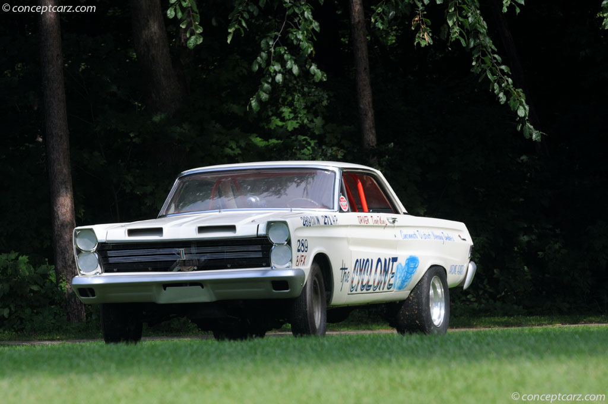

Experimental Muscle Machines of the 1960s
In the early 1960s, Ford Motor Company got deeply involved in drag racing to promote its performance image. The BFX (or "B/Factory Experimental") designation was used for cars that bent — and often broke — the rules of production car racing. These were testbeds for radical engine setups, weight reduction techniques, and suspension tuning.
Ford worked with independent teams and drivers like Gas Ronda, Les Ritchey, and Phil Bonner — all pushing the boundaries of drag racing with Ford’s factory support.
The BFX and A/FX programs helped Ford develop technologies and engines that would dominate drag racing and influence muscle car development through the rest of the 1960s and beyond.
